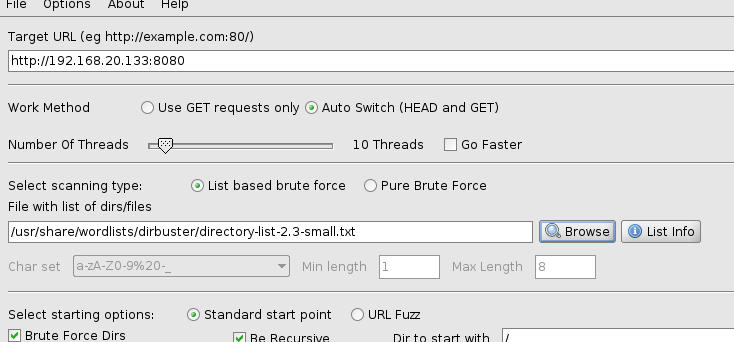
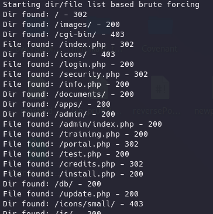
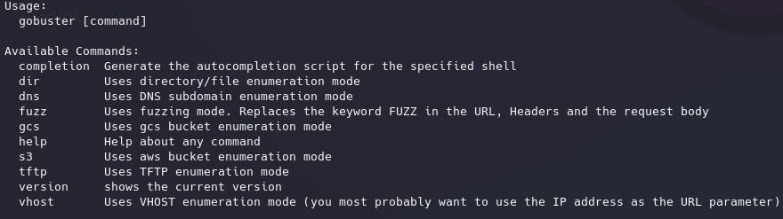

Si en las anteriores técnicas aun no hemos encontrado nada demasiado útil podemos analizar los contenidos.
Se puede realizar de forma manual como un usuario pero normalmente esto que está de cara al público suele estar más securizado.
Pero si hacemos un análisis más profundo puede haber archivos que se pueden estar sirviendo aunque no se referencien de cara al público y pueden ser más interesantes.
Una cosa a tener en cuenta es que esta técnica es que claramente es más intrusiva porque interactuamos directamente con la aplicación y por tanto generamos tráfico.
https://github.com/KajanM/DirBuster
Viene instalada por defecto en Kali.
Trata de hacer fuerza bruta en un dominio que le indiquemos mediante un diccionario.
Por defecto los diccionarios se encuentran en
/usr/share/wordlists/dirbuster


Es una herramienta similar, más reciente y escrita en go.
https://github.com/OJ/gobuster
También incorpora fuerza bruta sobre subdominios, virtual hosts o buckets en amazon.
Lo instalamos:
sudo apt install gobuster
Añadimos también mejores diccionarios:
git clone https://github.com/danielmiessler/SecLists
gobuster -h

gobuster dir -u http://192.168.20.133:8080 -w /home/kali/Desktop/SecLists/Discovery/Web-Content/directory-list-2.3-small.txt
También podemos buscar ficheros concretos por extensión
gobuster dir -u http://192.168.20.133:8080 -w /home/kali/Desktop/SecLists/Discovery/Web-Content/directory-list-2.3-small.txt -x pdf